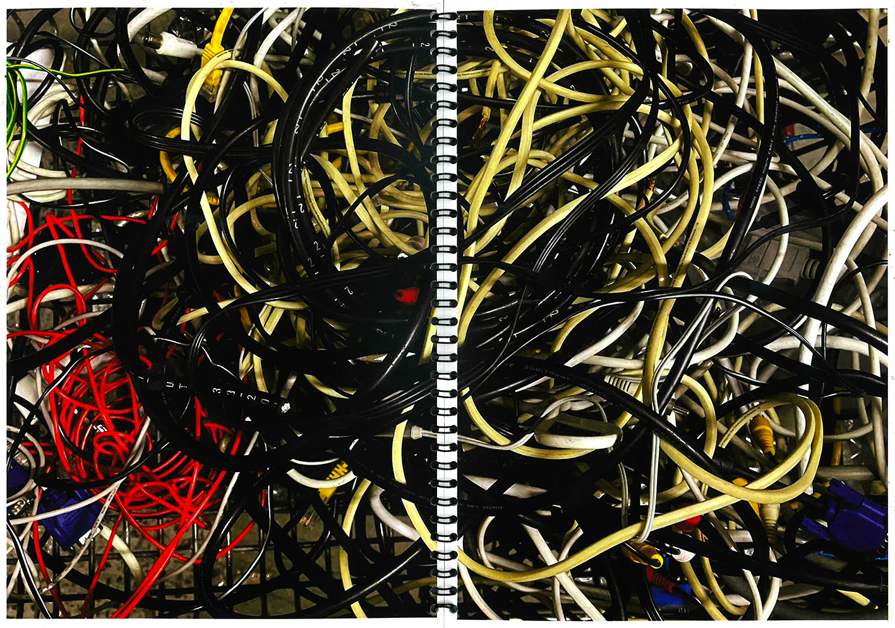
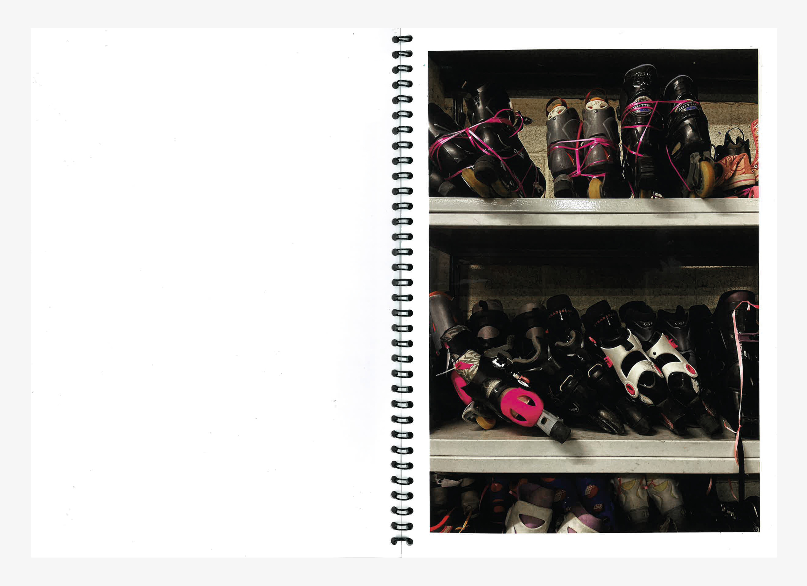
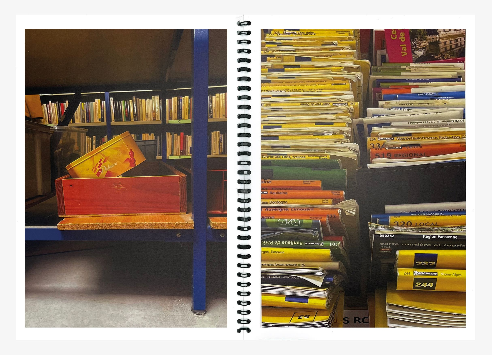
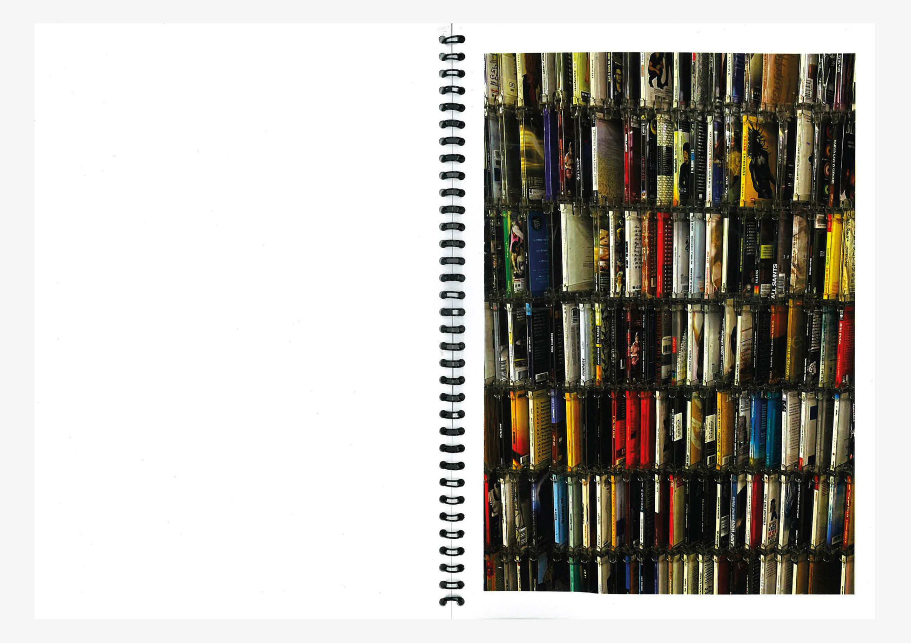
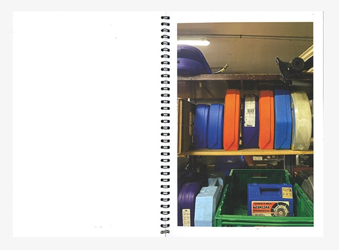
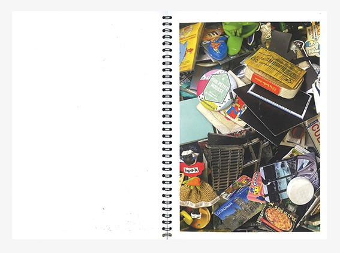
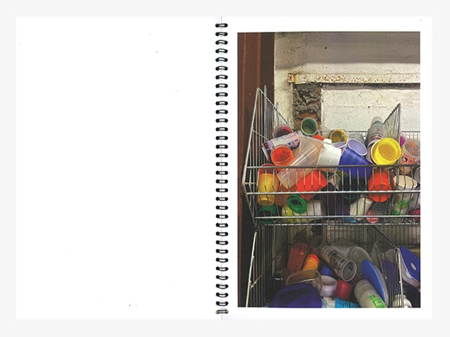
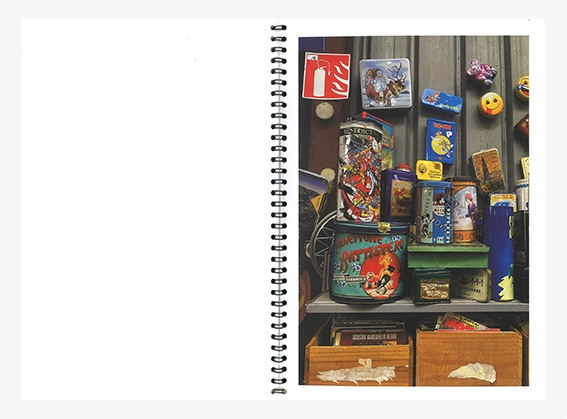
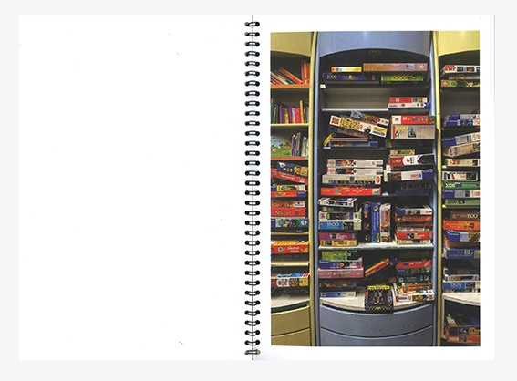
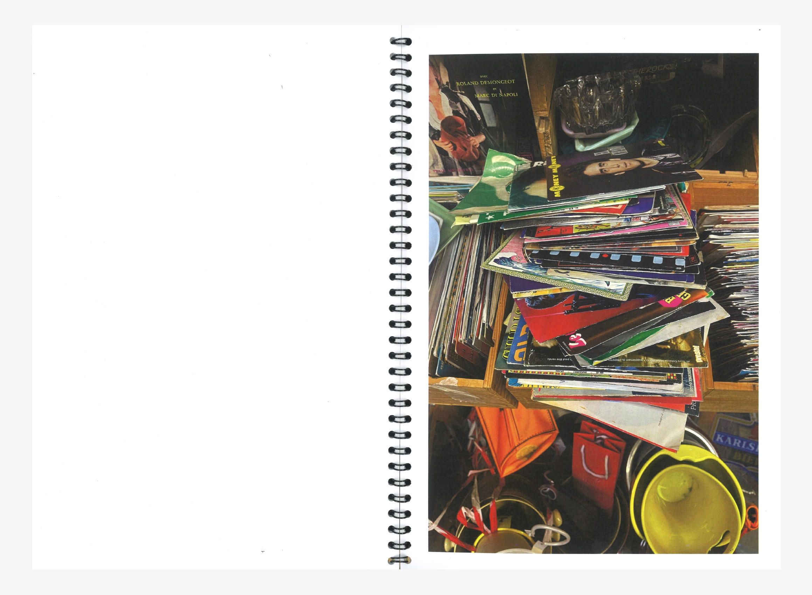

1 Chem. Du Fort, Wambrechis
Édition au format 21×29,7 cm
Cette édition photographique est une analyse d’un lieu dans lequel on retrouve une accumulation d’objets. À la manière de Bernd et Hilla Becher une typologie est créée par la répétition des formes et des couleurs.









